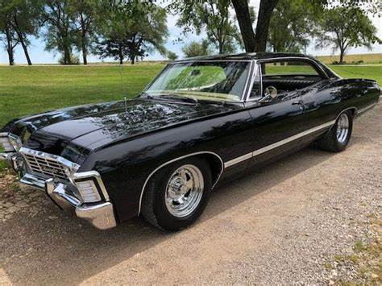
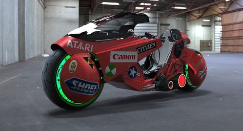
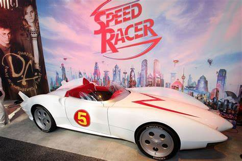
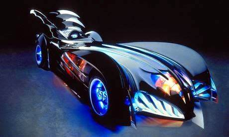
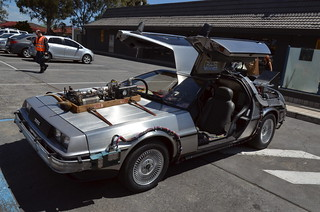
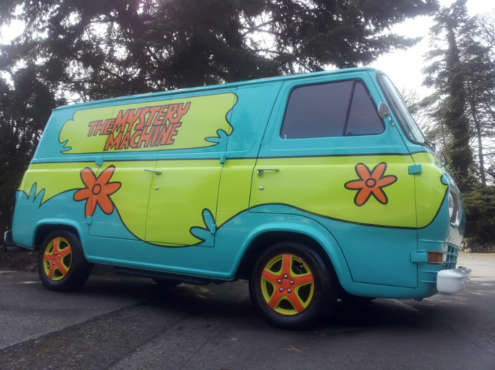
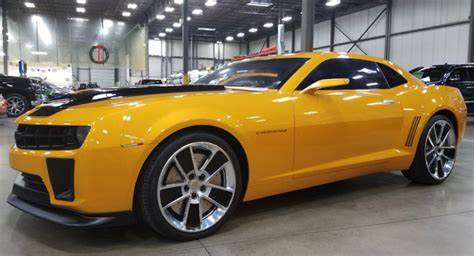

Opala 'Baby'
de Supernatural
Na cultuada série Supernatural, o carro do destemido caçador Dean Winchester é tão lendário quanto suas próprias aventuras sobrenaturais. O veículo em questão é um Chevrolet Impala 1967, preto imponente, conhecido carinhosamente como 'Baby'. Equipado com tudo o que é necessário para combater criaturas sobrenaturais, esse clássico automóvel se tornou uma verdadeira extensão do carismático personagem, exalando nostalgia e se tornando um ícone inegável da cultura pop.
Capsula
de Akira
No épico cyberpunk,a moto vermelha e futurista de Kaneda é mais do que um simples meio de transporte - é uma representação visual do espírito rebelde e da velocidade alucinante do protagonista. Conhecida como a icônica 'Capsula', essa máquina arrojada e distinta combina perfeitamente com o cenário distópico de Neo Tokyo. Sua silhueta marcante e poderosa simboliza o poder da juventude e tornou-se um símbolo incontestável da cultura pop e da estética futurista.
Mach 5
de Speed Racer
o carro Mach 5 é tão lendário quanto as corridas emocionantes protagonizadas pelo destemido piloto. Projetado pelo próprio pai de Speed, Pops Racer, o Mach 5 é uma verdadeira maravilha da engenharia automobilística. Com recursos inovadores como o botão Turbo, o aerofólio retrátil e as serras nas rodas, este carro veloz e elegante conquistou o coração dos fãs, tornando-se um ícone icônico da cultura pop e das corridas de alta velocidade
Batmóvel
do Batman
Olendário veículo do Cavaleiro das Trevas, é uma das máquinas mais reconhecíveis da cultura pop. Com um design futurista, elegante e intimidante, o Batmóvel personifica o poder e a agilidade do Batman enquanto patrulha as sombras de Gotham City. Equipado com uma impressionante gama de tecnologia de ponta, incluindo propulsores a jato, blindagem resistente e uma série de armamentos, este veículo extraordinário reflete a essência do Batman - o símbolo supremo de justiça e proteção contra o crime.
DeLorean DMC-12
De Volta para o Futuro
equipado com a famosa máquina do tempo, é um dos carros mais emblemáticos da história do cinema. O filme "De Volta para o Futuro" imortalizou esse veículo de design futurista e portas asa de gaivota.
Máquina dos Mistérios
de Scooby-doo
É a famosa van colorida e psicodélica usada pela turma do Scooby-Doo em suas investigações misteriosas. Conduzida por Fred, a van leva Scooby, Salsicha, Velma e Daphne para resolver casos de fantasmas e monstros disfarçados. Seu design distintivo e aparência retrô a tornam um ícone da série e um símbolo duradouro da cultura pop, sendo uma parte essencial das aventuras da turma e da identidade do desenho animado.
Bumblebee
de Transformers
O veículo é um dos principais Autobots e um dos personagens mais queridos pelos fãs, graças à sua personalidade amigável e leal. O Camaro dos Transformers tornou-se um símbolo reconhecível da série e do universo dos robôs alienígenas que se transformam em veículos. Sua popularidade crescente ao longo dos filmes consolidou sua posição como um ícone da cultura pop moderna.